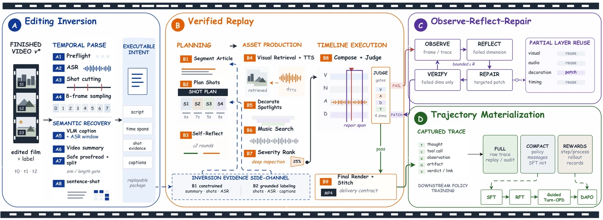
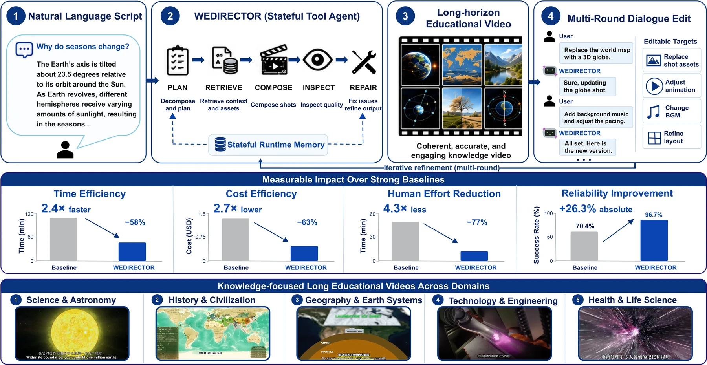
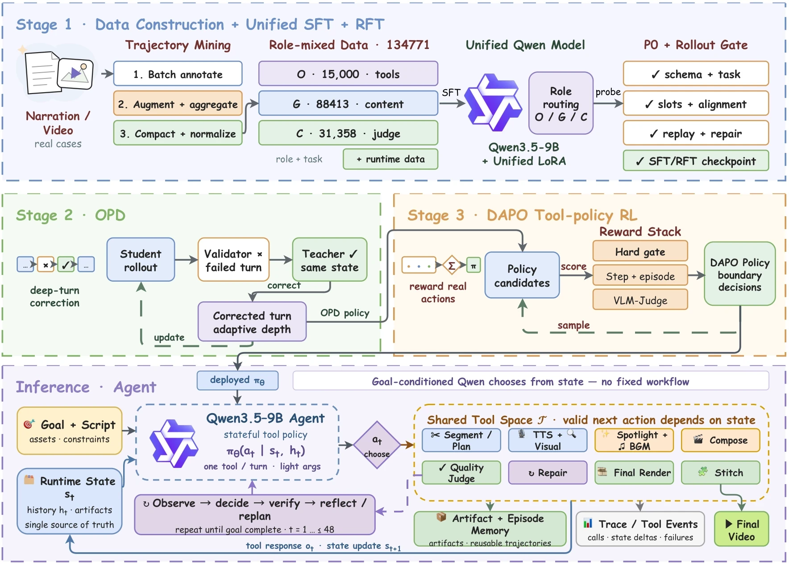
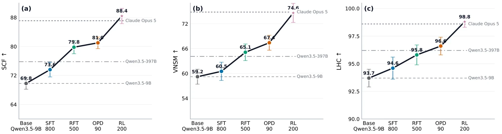
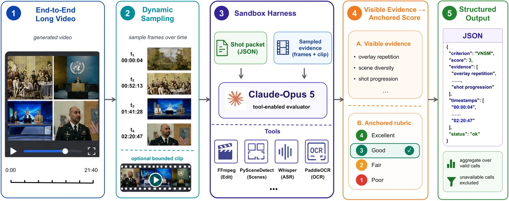

▶03:21
To Space, On a Rocket
太空科普 · 火箭如何送人上天
AUTONOMOUS SCRIPT → SCREEN · LONG-HORIZON TOOL AGENT
One Agent Runs the Whole Editing Room
1Xidian University 2WeChat Vision, Tencent Inc.
One 9B policy runs the whole cutting room: it segments the script, plans shots, retrieves visuals, synthesizes narration, composes the timeline, inspects every render — and repairs only what failed. No human in the loop.
Every turn is observe → think → act. After the first cut lands, the director chats: swap a shot's source, change the music, restyle the captions — the policy re-plans locally and re-delivers, never re-shooting what already worked.
Finished videos hide the process that made them. We invert them back into timestamped intent, then replay that intent through the real toolchain — executable supervision, grounded in real tool returns.

Script-to-video is formulated as a stateful, long-horizon tool-use problem. A single role-routed policy closes the loop between planning, execution, observation, inspection and repair.


Owns the brief, the state and the final call.
Segments narration into timestamped beats.
Plans shots, retrieves visuals, synthesizes speech.
Composes timeline, effects and music.
Judges every dimension, routes localized repair.
Unedited deliveries from the deployed runtime. One script in — one finished film out.
太空科普 · 火箭如何送人上天
中华文明 · 时间洪流中的延续
没有水泵 · 大树如何送水上树冠
100 held-out cases · 5 independent runs · 5 registered metrics (mean ± std) + production cost per output minute.
| METHOD | SCF↑ | VNSM↑ | TPR↑ | LHC↑ | ERY↑ | CALLS/MIN↓ | TOKENS/MIN↓ |
|---|---|---|---|---|---|---|---|
| BASE MODELS · NATIVE CAPABILITY | |||||||
| Qwen3.5-9B | 69.8±1.6 | 59.2±1.8 | 79.5±1.7 | 93.7±0.8 | 70.4±2.1 | 3.1 | 11,883 |
| Qwen3.6-27B | 72.6±1.4 | 59.7±1.6 | 80.1±1.5 | 95.1±0.7 | 72.1±1.9 | 3.9 | 6,742 |
| Qwen3.6-35B-A3B | 71.9±1.9 | 56.7±2.0 | 83.4±1.8 | 97.3±0.6 | 79.4±2.3 | 4.7 | 27,554 |
| UPPER BOUNDS | |||||||
| Qwen3.5-397B-A17B | 75.8±1.5 | 64.1±1.7 | 84.6±1.6 | 96.2±0.8 | 86.9±1.8 | 6.0 | 15,223 |
| Gemini 3.1 Pro | 80.2±1.2 | 66.5±1.3 | 88.2±1.2 | 98.0±0.5 | 90.3±1.5 | 4.5 | 13,814 |
| Claude Opus 5 | 87.1±1.0 | 74.8±1.1 | 93.1±1.0 | 98.6±0.4 | 95.8±1.2 | 11.6 | 78,763 |
| OUR METHOD | |||||||
| WEDirector (Ours) | 88.4±2.1 | 74.6±2.3 | 94.0±2.0 | 98.8±0.5 | 96.7±1.8 | 3.1 | 2,377 |
Common-harness evaluation; our 9B policy also runs against the native stacks below.
| NATIVE SYSTEM | SCF↑ | VNSM↑ | TPR↑ | LHC↑ | ERY↑ | MIN/MIN↓ | $/MIN↓ |
|---|---|---|---|---|---|---|---|
| Crayotter | 81.6 | 67.8 | 89.1 | 94.2 | 91.6 | 8.6 | 0.97 |
| VideoAgent | 78.4 | 65.2 | 86.7 | 93.5 | 88.7 | 10.4 | 0.58 |
| WEDirector | 88.4 | 74.6 | 94.0 | 98.8 | 96.7 | 2.1 | 0.09 |
Task-matched native systems, rerun from the same script, source pool, duration and aspect ratio.
| HUMAN MOS (1–5) | THEME | RICH | NARR | SMOOTH | VISUAL | OVERALL |
|---|---|---|---|---|---|---|
| Crayotter | 3.58 | 3.42 | 3.35 | 3.48 | 3.55 | 3.48 |
| VideoAgent | 3.46 | 3.60 | 3.30 | 3.42 | 3.52 | 3.46 |
| WEDirector | 4.45 | 4.32 | 4.58 | 4.52 | 4.38 | 4.56 |
Blinded human evaluation · 20 held-out cases per system · 3 qualified raters.

Scaling alone does not specialize. A 35B base still trails by 2.5 VNSM; even Gemini 3.1 Pro trails WEDirector on all five metrics (8.2 SCF, 8.1 VNSM). The gap is closed by task-specific post-training, not capacity.
On par with Claude Opus 5 — at 33.1× fewer tokens. Better on SCF (+1.3), TPR (+0.9), LHC (+0.2), ERY (+0.9), −0.2 on VNSM; every metric within 1.3 points, with 97.0% fewer generated tokens and 73.3% fewer calls per output minute.
Native-stack advantage holds end-to-end. +6.8 SCF over Crayotter and +10.0 over VideoAgent, while running 4.1× / 5.0× faster at 10.8× / 6.4× lower cost — and humans prefer it on every dimension (4.56 vs 3.48 overall).
Every training stage pays rent. SFT buys reliability (+17.2 ERY), RFT the largest semantic jump, Turn-OPD aligns student states, DAPO closes what remains — monotonic across all five metrics.
A finished film is sampled uniformly per shot; the harness confirms keyframes as visual evidence and runs its analysis toolchain — layout, saliency, legibility, motion-overlap — before the held-out Claude Opus 5 judge scores two rubric dimensions: visual_impact and clarity , each with detailed reasoning and cited frames.
构图遵循三分法，主体稳定处于视觉重心；暖棕复古色调全片统一，特写与中景交替避免视觉疲劳，转场节奏贴合旁白呼吸感。扣分项：S11 叠化时长略拖。
字幕与背景对比度 7.2:1，全片无文字溢出与遮挡；关键信息均与图示动画同步出现，动效未干扰正文阅读；S07 信息密度偏高，但仍在可读阈值之内。

Four held-out scripts, each produced by both systems from the same script, source pool, duration and aspect ratio. Pick a domain — both sides switch together; press play, both rolls run in sync.
@article{mu2026wedirector,
title = {WEdirector: One Agent Runs the Whole Editing Room},
author = {Mu, Chenyu and others},
journal = {arXiv preprint arXiv:XXXX.XXXXX},
year = {2026}
}